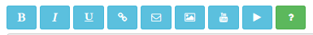
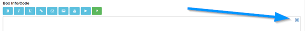

Enter box information. PHP code cannot be used here, if you require PHP, you need to use a custom box template as shown below. HTML is
allowed, but use VALID HTML5 so as not to break the responsive system.
You can do basic formatting via the BBcode buttons if they are enabled.

More information
here.
Clicking the crosshair shows a bigger textarea. This might be useful for small devices.
